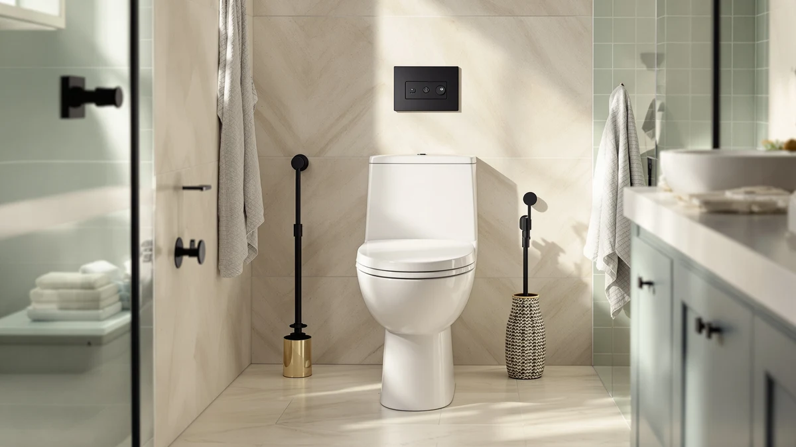

Kohler K-5172-0 San Souci Comfort Height Compact Elongated Review (2026): Worth It?
Prices and picks verified as of November 2026. Independent, reader-supported reviews.


Quick Answer
The Kohler K-5172-0 San Souci Comfort Height Compact Elongated is a one-piece toilet built around a taller seat and a shorter elongated bowl, aimed at bathrooms where a full-length elongated bowl would crowd the room. At $924.75 it costs more than the TOTO Promenade II alternatives we compared it against, but the one-piece shell and concealed trapway make it easier to keep clean over time.
Our pick: KOHLER K-5172-0 San Souci Comfort, $924.75 Check Price on Amazon
Bottom line: our top pick is the KOHLER K-5172-0 San Souci Comfort Height Compact Elongated at $924.75.
Things to Know Before You Buy
- It's a one-piece toilet, so the tank and bowl form a single molded unit with no bolted seam to collect grime.
- "Comfort height" means the seat sits at a taller, chair-like height rather than a standard-height bowl.
- The elongated bowl is built in a compact footprint, which matters if your bathroom can't fit a full-size elongated model.
- At $924.75, it costs between $19 and $40 more than the TOTO Promenade II variants we cross-shopped it against.
- Kohler also sells a near-identical K-5172-HC-0 version with a different trip lever placement, worth checking before you buy.
This Kohler K-5172-0 San Souci Comfort Height Compact Elongated review exists because a lot of bathrooms are too tight for a full-length elongated toilet, even when a taller household wants the comfort of an elongated seat. Kohler built the San Souci to split that difference: an elongated bowl shape shrunk into a compact footprint, paired with a taller comfort-height seat and a one-piece shell that skips the bolted tank-to-bowl seam found on cheaper two-piece models.
We went through the current Amazon listing, the price history and the closest competing models to see where the K-5172-0 actually earns its $924.75 price tag. Kohler's one-piece construction and concealed trapway give it a cleaning advantage over a typical two-piece toilet, but the TOTO Promenade II line we compared it against undercuts it by $19 to $40 while offering a similar elongated, comfort-height layout, so the extra cost needs a clear reason to make sense for your bathroom. That reason, in most cases, comes down to the compact footprint: if your existing rough-in and floor space were measured for a shorter toilet, the San Souci's smaller shell is the detail that actually matters, not the one-piece construction it shares with its TOTO rivals.
Why You Should Trust Us
Ilane Tall researches bathroom fixtures for Best One Piece Toilets, focusing on how one-piece toilet models compare on dimensions, price and verified owner feedback rather than on marketing copy. For this Kohler K-5172-0 San Souci Comfort Height Compact Elongated review, we pulled the current Amazon price, the manufacturer's listed dimensions and the closest competing models in the same price band, then checked where the claims in Kohler's own listing held up against what buyers of comparable models report. We don't own this toilet and we didn't install it ourselves, so every claim below is tied to a spec sheet, a price, or a pattern across owner reviews rather than a personal impression.
Our Research Experience
Our process for this Kohler K-5172-0 San Souci Comfort Height Compact Elongated review is research-based rather than physical. We compared the manufacturer's listed dimensions, the current Amazon price and the closest competing one-piece models in the same comfort-height, compact-elongated category, including both Promenade II variants from TOTO. We cross-checked the K-5172-0 against its near-twin, the K-5172-HC-0, to confirm where the two models actually differ, since Kohler sells them side by side with almost identical listings. Where a rating or review count appears on this page, it's pulled directly from the product data we have on file for that specific model, and we don't state one where none exists.
Overview & Specs

KOHLER K-5172-0 San Souci Comfort
What we like
- One-piece shell removes the bolted tank-to-bowl seam that two-piece toilets trap grime in
- Compact elongated bowl fits a taller seat into a footprint closer to a round-front toilet
- Kohler sells a near-identical trip-lever variant (K-5172-HC-0) at the same price if you need the handle on the other side
Flaws but not dealbreakers
- Priced $19 to $40 above the TOTO Promenade II models we compared it against
- At 25.31 x 16.38 x 27.75 inches, it's still a full-size fixture, not a space-saving model in the way a corner toilet is
- No rating or review count is listed for this specific model, so we can't point to a verified owner consensus here
| Material | — |
| Size | 25.31 x 16.38 x 27.75 inches |
The core pitch behind the Kohler K-5172-0 San Souci Comfort Height Compact Elongated is fitting an elongated bowl, which most people find more comfortable than a round-front bowl, into a footprint that doesn't eat up extra floor space. Kohler lists the unit at 25.31 by 16.38 by 27.75 inches, dimensions that place it closer to a standard round toilet's footprint than to a full-length elongated model, which typically runs a few inches longer front to back. The one-piece construction means the tank is molded directly onto the bowl rather than bolted on, so there's no seam at the base of the tank for water and grime to collect in over years of use.
At $924.75, the K-5172-0 sits at the upper end of what we'd expect to pay for a toilet in this category, and Kohler backs that price with a near-twin model, the K-5172-HC-0, that matches it dollar for dollar while swapping the trip lever side. That pricing parity between the two Kohler variants suggests the premium is tied to the San Souci design itself, the comfort-height seat and compact elongated bowl, rather than to any single trip lever configuration. Buyers deciding between the two should pick based on which side of the tank they want the handle on, not on price.
What We Liked
The biggest draw of this Kohler K-5172-0 San Souci Comfort Height Compact Elongated review's subject is the one-piece build. Two-piece toilets bolt a separate tank onto the bowl, and that seam is where grime and hard water deposits build up over the years in a way a one-piece shell simply avoids. Pairing that with a compact elongated bowl is the other smart move here: elongated seats are more comfortable for most adult users than round-front bowls, but a full-length elongated toilet can crowd a small half-bath. Kohler's compact version keeps the elongated shape while trimming the footprint closer to what a round toilet would take up.
We also like that Kohler offers the K-5172-HC-0 at an identical $924.75 price point, giving buyers a choice of trip lever placement without a cost penalty either way. For households retrofitting an older bathroom where the water supply line sits on a specific side of the toilet, that flexibility removes a decision that otherwise might force a compromise on plumbing layout. The comfort-height seat itself is worth calling out separately from the bowl shape: it's a seat-height change, not a bowl-shape change, so it benefits taller adults and anyone who finds a standard-height seat harder to get up from, regardless of whether they also need the compact elongated bowl.
What Could Be Better
Price is the main sticking point. At $924.75, the K-5172-0 costs $18.75 more than the TOTO Promenade II 1G at $906.00, and $39.75 more than the standard Promenade II elongated at $885.00. Both TOTO models offer a comparable elongated, one-piece layout, so buyers who don't specifically need Kohler's comfort-height seat profile or compact footprint are paying a premium that's hard to justify on specs alone.
We also don't have a star rating or review count on file for this specific model, which means we can't point to a verified owner consensus the way we can for products where that data exists. Anyone comparing this toilet against a rated competitor should weigh that gap into the decision rather than assuming the absence of a rating reflects poorly, or well, on the product. A missing rating also means you should lean more heavily on the manufacturer's dimensions and your own rough-in measurement before buying, since there's less of a verified owner track record to fall back on if the fit turns out to be wrong.
Who Is It For?
This Kohler K-5172-0 San Souci Comfort Height Compact Elongated review points toward one specific buyer: someone replacing a toilet in a small or oddly shaped bathroom who still wants a taller comfort-height seat and a one-piece build instead of a budget two-piece unit. If your bathroom already fits a full-length elongated toilet, the compact footprint here buys you nothing, and you'd likely do better shopping standard-size elongated models at a lower price. If you specifically need the trip lever on the opposite side, the K-5172-HC-0 variant covers that at the same cost, so check your rough-in and supply line position before choosing between the two. Buyers who want the lowest-cost one-piece elongated toilet in this comparison, without the compact bowl or the taller seat, are better served by one of the TOTO Promenade II models instead.
Alternatives to Consider
We compared the K-5172-0 against its closest Kohler and TOTO rivals on price, dimensions and build. Here's where each one fits if the San Souci isn't quite the right match for your bathroom.
Also Great
KOHLER K-5172-HC-0 San Souci Comfort
Identical price and specs to the K-5172-0, built for buyers who need the trip lever on the opposite side of the tank.
$924.75
Check Price on Amazon
Also Great
TOTO® Promenade® II 1G® One-Piece
TOTO's 1G flush system in a one-piece elongated shell, priced $18.75 below the Kohler San Souci.
$906.00
Check Price on Amazon
Best Value
TOTO® Promenade® II One-Piece Elongated
The cheapest one-piece elongated option of the group at $885.00, without the compact footprint or comfort-height seat.
$885.00
Check Price on AmazonIs the Kohler K-5172-0 San Souci Comfort Height Compact Elongated a one-piece or two-piece toilet?
It is a one-piece design, meaning the tank and bowl are molded as a single unit rather than bolted together.
What does comfort height mean on the Kohler K-5172-0 San Souci?
Comfort height places the seat closer to standard chair height than a standard-height toilet, which is why Kohler markets this line toward taller adults and anyone who finds low seats harder to sit down on or stand up from.
Frequently Asked Questions
Is the Kohler K-5172-0 San Souci Comfort Height Compact Elongated a one-piece or two-piece toilet?
What does comfort height mean on the Kohler K-5172-0 San Souci?
How does the Kohler K-5172-0 San Souci compare to the TOTO Promenade II on price?
Final Verdict
This Kohler K-5172-0 San Souci Comfort Height Compact Elongated review comes down to one trade-off: Kohler charges $924.75 for a one-piece shell, a comfort-height seat and an elongated bowl squeezed into a compact footprint, while TOTO's Promenade II line covers similar ground for $18.75 to $39.75 less. If your bathroom specifically needs that smaller elongated footprint or you want the trip lever on a particular side, the K-5172-0 or its K-5172-HC-0 twin earns the premium. If space isn't the constraint, the TOTO alternatives we compared it against are the better value.